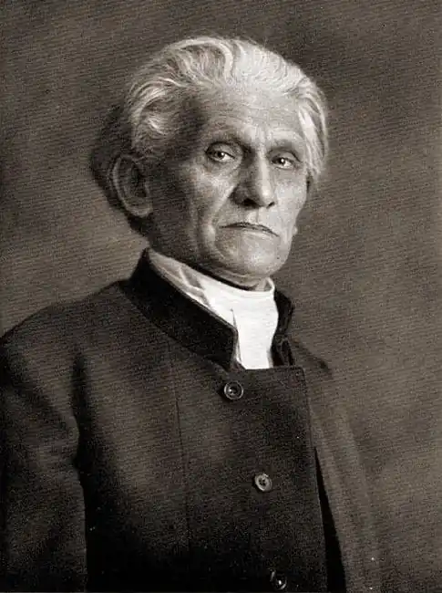

ҐЕОРГЕ, Стефан (George, Stefan — 12.07.1868, м. Бінген-на-Рейні — 04.12.1933, Локарно, Швейцарія) — німецький поет.Ґеорге — єдиний значний німецький представник епохи декадансу, чиї езотеричні прозріння трактувались і як апологія Третього Рейху, і як передбачення звільнення світу від фашизму.
Народився Ґеорге у маленькому німецькому містечку Бінґені-на-Рейні. Упорядкований побут тихої провінції відобразився і в перших віршах поета. Топос його поезій свідомо обмежений: це парк, берег річки, кімната, освітлена настільною лампою. Але в кожній часточці цього одноманітного та зрозумілого світу Ґеорге відчуває биття пульсу життя. Поет прагне збагнути потаємний зміст навколишніх предметів, осягнути невидимі зв'язки всього сущого. У віршах Ґеорге переплелися риси неоромантизму та неокласицизму, символізму й імпресіонізму:
І стане каменем багно мого життя...Від інею дерева гнуться над землеюІ вітер стогнучи шукає забуттяТа плаче вдвох з самотністю моєю.У 1892 р. Ґеорге написав поему "Альґабал" ("Algabal"), у якій прославляв жорстокість римського імператора Геліогабала. У творі Ґеорге він постає в образі вродливого юнака, котрий, спускаючись мармуровими сходами у червоній мантії, без будь-якого трепету переступає через труп свого брата. Античність втрачає світлий ореол "дитинства людства": її гармонія — лише прикриття шалу пристрастей, а світ давніх жахів слугує ілюстрацією сучасності. У 1892-1919 pp. Ґеорге разом з однодумцями видавав журнал "Листки мистецтва". Головна ідея, якою керувався поет при створенні нового друкованого органу, формулювалась одним словом: "вибраність". Стиль поезії Ґеорге став стилем його життя. Йому здавалось, що поет покликаний красою вищого мистецтва рішуче змінити довкілля. На обкладинці нового журналу зазначалося: "Для обмеженого, вибраного кола читачів". Журнал Ґеорге можна розглядати як своєрідну поліграфічну пам'ятку самої ідеї "мистецтва для мистецтва": ретельно добирався папір, велике значення надавалось його якості та кольору, для набирання текстів виготовляли особливі шрифти. Зі сторінок "Листків мистецтва" звучали заклики до нового ставлення до прекрасного: художник не повинен служити "ні збоченням буржуазії", "ні вимогам доби". Саме Ґеорге належить презирливе словечко "літератори" на адресу письменників демократичного напряму, Література, на його думку, повинна скинути пута політики, звільнитися від "світоглядів" і "думок". Але це не означало, що Ґеорге рішуче відвернувся від земного життя. Навпаки, завдання журналу було наскрізь соціальним: виховати нову людину, чутливу до прекрасного. Ще у довоєнній збірці Ґеорге "Зірка союзу" ("Der Stern des Bundes", 1914) були зібрані заповіді та правила, звернені до молоді. Це була справжня "доктрина" нової суспільної організації: об'єднання чистих духом молодих людей під егідою учителя-майстра. Майстер володіє "таємним знанням", яке він не повністю і не одразу відкриває своїм учням. У 1928 р. вийшла друком збірка Ґеорге "Нове царство"("Das Neue Reich"), у якій поет детальніше розповідав про побудову утопічної держави. Тут панує принцип безумовного підкорення вождю, вчителю, майстру, авторитет якого забезпечується його містичним призначенням. Майстер не повинен нічому навчатися ні у людей, ні у життя — він керується винятково своєю метою. Так Ґеорге трактував ідеї Ф. Ніцше. Вірші "Нового царства" насичені складними езотеричними образами — це дозволило "використовувати" спадок Ґеорге і фашистам, і антифашистам. Сам він не хотів залишатися у фашистській Німеччині, емігрував і мешкав у Швейцарії. Поезія Ґеорге стала символом епохи: він намагався вилучити "ідеї" зі світу прекрасного, зняти "моральні обмеження" з творчості. Але за усіма цими традиційними поривами "мистецтва для мистецтва" у спадку Ґеорге відчутний "вакуум", а "краса і досконалість" — "абсолютне ніщо". Поет відчуває цей розлад як трагедію не лише творчості, а й життя. Глава елітарної школи, Ґеорге проголосив месіанську роль мистецтва, назавжди звільнивши свою поезію від розділових знаків "як відблисків ницої логіки". Ґеорге виявився поетом-пророком майбуття своєї батьківщини: Вже без води язик закостенівЯк стадо мечетесь Будинок ваш згорівІ грянуть Господнії сурми.Українською мовою окремі вірші Ґеорге переклали М. Орест, О. Зуєвський та ін. За Є. Абрамовсъких